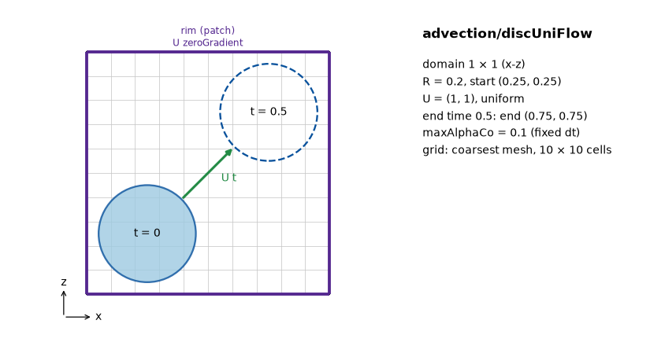
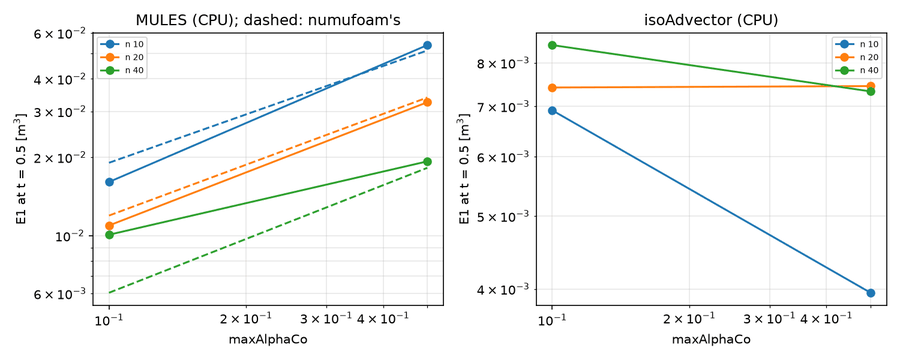
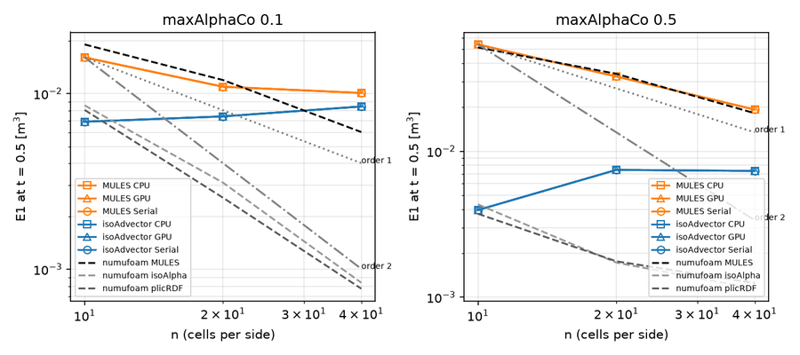
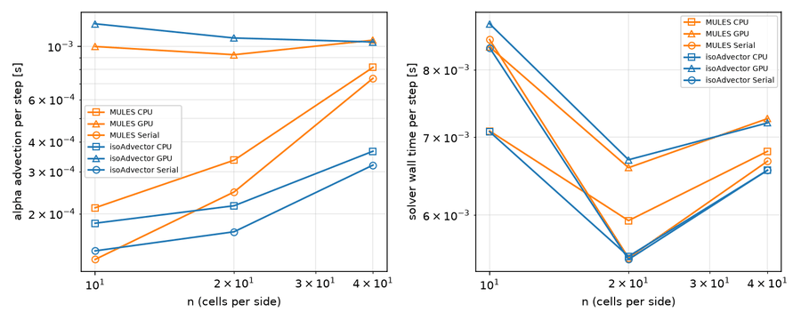
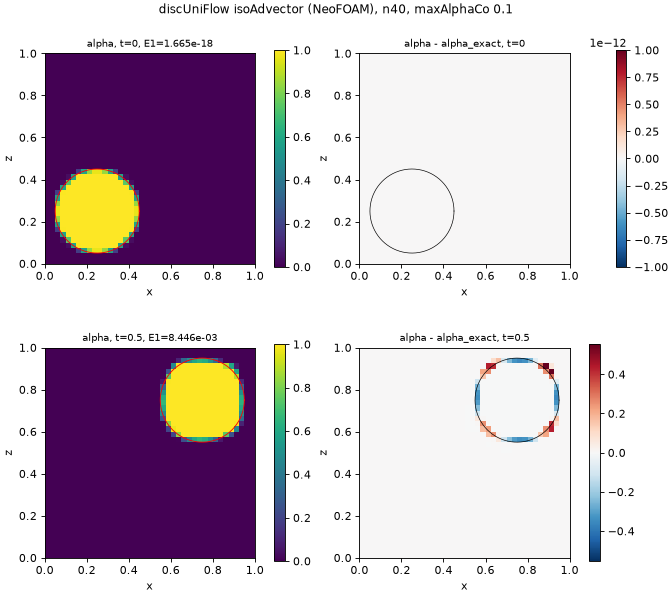
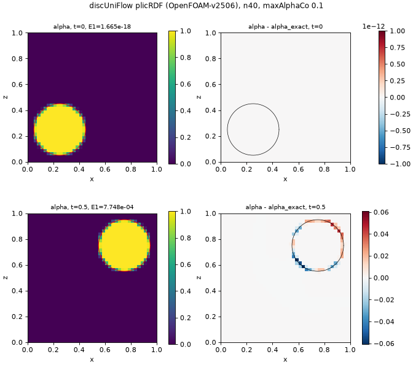

advection/discUniFlow¶
A disc translated in a uniform flow: the paper’s advection test (Scheufler & Roenby,
arXiv 1801.05382, sec. 4.2.1, as in numufoam). NeoN’s isoAdvector (gradAlpha
reconstruction) and NeoN’s MULES are compared with numufoam’s stored errors over
resolution and Courant number.
Setup¶

The unit square (x-z, one cell in y) on the coarsest grid (n = 10). The disc starts at (0.25, 0.25) and ends at (0.75, 0.75) after U t.¶
Quantity |
Value |
Where set |
|---|---|---|
Domain |
1 × 1 (x-z), 1 cell in y |
|
Disc radius R, start |
0.2, (0.25, 0.25) |
|
Velocity U |
(1, 1), uniform, fixed |
|
End time |
0.5 (end position (0.75, 0.75)) |
|
Time step |
fixed, from |
|
Method |
isoAdvector (gradAlpha, |
|
MULES gradient |
Gauss linear |
|
Solver |
|
|
Only alpha is transported; the velocity stays fixed. The errors are measured once, at t = 0.5, against the exactly cut disc at its end position.
Inputs¶
File ( |
Content |
|---|---|
|
base case (mesh, disc, U, controls incl. the |
|
the in-situ tables at the function’s write times (every 0.1): |
|
|
|
numufoam’s |
Metrics¶
TwoPhaseFlow’s volumeFractionError at t = 0.5, from NeoFOAM postProcess tables.
The solver’s volumeFractionError.dat (the same errors, to round-off) supplies the
timing and mesh columns.
Metric |
Meaning |
Formula |
|---|---|---|
|
shape error (absolute) |
|
|
mass error |
|
|
boundedness error |
|
|
timings, step count |
wall time per advection, solver wall time, number of steps |
Run¶
pixi run benchmark benchmarks/advection/discUniFlow --smoke
pixi run benchmark benchmarks/advection/discUniFlow -c 1
Changed parameters¶
Parameter |
Meaning |
Values |
Smoke run |
|---|---|---|---|
Mesh |
cells per side n (n × n; |
10, 20, 40 |
10 |
CFL ( |
interface Courant number; sets the fixed dt |
0.1, 0.5 |
0.1 |
Executor |
NeoN backend ( |
Serial, CPU (OpenMP), GPU (CUDA) |
Serial |
Method |
interface advection ( |
isoAdvector, MULES |
all |
36 cases (3 × 2 × 3 × 2); the smoke run (--smoke) has 2. The raw payloads are in benchmarks/advection/discUniFlow/benchmark.yaml.
About 1.5 min with -c 1. numufoam’s CFLs 0.05 and 0.2 are commented-out variants
too.
Larger meshes¶
Uncomment n80, n160, n320 in benchmark.yaml. n320 needs about 20 MB per
case and 1–4 min on Serial per CFL. Neither method converges on n10 to n40; on
n320, MULES reaches 3.5 × numufoam’s E1.
Results¶

E1_vs_CFL¶

E1_vs_n¶

time_per_step¶
Method |
CFL |
Mesh |
E1 (shape) |
mass error |
bound error |
steps |
wall [s] Serial / CPU / GPU |
|---|---|---|---|---|---|---|---|
MULES |
CFL01 |
n10 |
0.01607 |
0 |
2.883e-19 |
100 |
0.3 / 0.25 / 0.35 |
MULES |
CFL01 |
n20 |
0.01094 |
2.776e-17 |
5.63e-19 |
200 |
0.4 / 0.46 / 0.56 |
MULES |
CFL01 |
n40 |
0.01008 |
8.327e-17 |
1.791e-18 |
400 |
1.1 / 1.1 / 1.3 |
MULES |
CFL05 |
n10 |
0.05389 |
0 |
0.01455 |
20 |
0.28 / 0.23 / 0.27 |
MULES |
CFL05 |
n20 |
0.03252 |
5.551e-17 |
0.01186 |
40 |
0.36 / 0.38 / 0.41 |
MULES |
CFL05 |
n40 |
0.01928 |
5.551e-17 |
0.008523 |
80 |
0.85 / 0.87 / 0.91 |
isoAdvector |
CFL01 |
n10 |
0.006916 |
0 |
5.242e-17 |
100 |
0.27 / 0.28 / 0.37 |
isoAdvector |
CFL01 |
n20 |
0.007416 |
5.551e-17 |
6.661e-16 |
200 |
0.4 / 0.43 / 0.58 |
isoAdvector |
CFL01 |
n40 |
0.008446 |
1.388e-16 |
4.374e-16 |
400 |
0.93 / 0.95 / 1.2 |
isoAdvector |
CFL05 |
n10 |
0.003953 |
2.776e-17 |
3.275e-16 |
20 |
0.28 / 0.23 / 0.28 |
isoAdvector |
CFL05 |
n20 |
0.007448 |
1.388e-17 |
8.144e-16 |
40 |
0.36 / 0.36 / 0.42 |
isoAdvector |
CFL05 |
n40 |
0.007328 |
5.551e-17 |
1.637e-15 |
80 |
0.86 / 0.86 / 0.91 |
Rows: the Serial executor. CPU and GPU agree with it to 8e-14 (relative, in these columns; round-off values below 1e-10 left out).
All 36 cases and columns: results.csv, changes against the previous snapshot: changes.json.
Mass and bounds: mass is conserved to round-off for both methods. isoAdvector stays in [0, 1]; MULES does only at CFL 0.1 (bound error 1.5e-2 at CFL 0.5).
MULES vs numufoam: E1 is 0.84–0.92 × numufoam’s at n10 and n20 (CFL 0.1) and 1.67 × at n40; NeoN uses a Gauss linear interface normal, numufoam
pointCellsLeastSquares.isoAdvector with gradAlpha does not converge on this sharp disc: E1 = 6.9e-3, 7.4e-3, 8.4e-3 on n10 to n40 at CFL 0.1. OpenFOAM’s gradAlpha behaves the same (see advection/discUniFlowTestsuite for exact parity); plicRDF and isoAlpha are not yet in NeoN.
The alpha fields at t = 0.5 on n40 show the difference:

NeoFOAM, isoAdvector with gradAlpha, n40, maxAlphaCo 0.1: E1 = 8.4e-3. The error (right) reaches ±0.5 in cells along the whole interface.¶

OpenFOAM-v2506, isoAdvector with plicRDF, same case: E1 = 7.7e-4, with errors below ±0.06. This is the reconstruction NeoN still needs.¶
Changes since the previous snapshot¶
Against the previous snapshot: 0 flagged (a metric off by more than a factor 2, a case missing or NaN), 0 new cases.